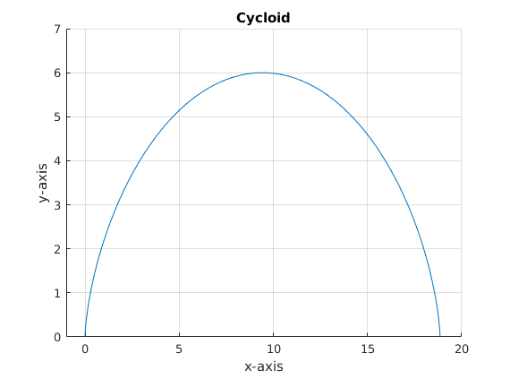
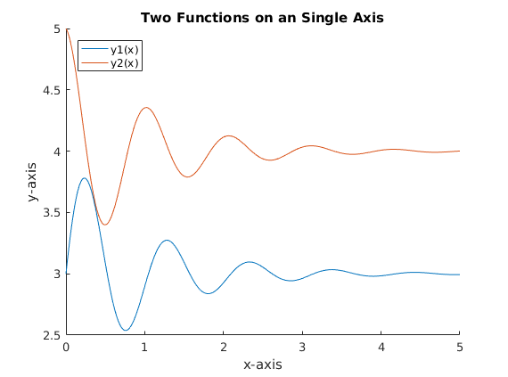
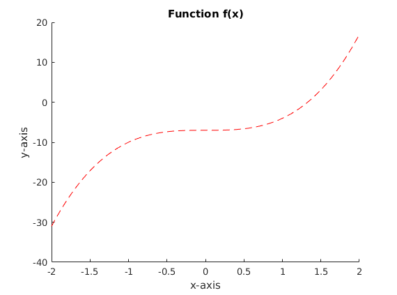

Contents
clear all
clc
Chapter 2 #7
M = [0 0 0 0 0 1;0 0 0 0 0 1;1 2 3 4 5 1;0 2 4 6 8 1;8 7 2 5 9 1]
M =
0 0 0 0 0 1
0 0 0 0 0 1
1 2 3 4 5 1
0 2 4 6 8 1
8 7 2 5 9 1
Chapter 2 #32
M = [17:0.06:23];
size(M)
ans =
1 101
Chapter 2 #33
M(1,end)
ans =
23
Chapter 11 #1
r = 3;
t = linspace(0,2*pi,1000);
x = r*(t - sin(t));
y = r*(1 - cos(t));
figure(1)
hold on
plot(x,y)
xlabel('x-axis')
ylabel('y-axis')
grid on
ylim([0,7])
xlim([-1,20])
title('Cycloid')
hold off

Chapter 11 #3
x = linspace(0,5,1000);
y1 = 3 + exp(-x) .* sin(6*x);
y2 = 4 + exp(-x) .* cos(6*x);
figure(2)
hold on
plot(x,y1)
plot(x,y2)
title('Two Functions on an Single Axis')
xlabel('x-axis')
ylabel('y-axis')
legend('y1(x)','y2(x)','location','NorthWest')
hold off

Other Problems #1
syms v
functionf = 3*v^3 - 7;
vv = [-2:0.01:2];
yy = subs(functionf,v,vv);
figure(3)
hold on
title('Function f(x)')
plot(vv,yy,'--r')
xlabel('x-axis')
ylabel('y-axis')
hold off

Other Problems #2
A = [3 -7 2;2 3 -1;-5 12 10];
B = [5;11;0];
answer = inv(A)*B;
fprintf('\nx = %g \ny = %g \nz = %g\n',answer(1),answer(2),answer(3))
x = 4.02589
y = 1.18123
z = 0.595469
Other Problems #3
A = [1 -3 -1;0 4 1; -1 0 -3];
B = [-2;7;2];
answer = inv(A)*B;
fprintf('\nx = %g \ny = %g \nz = %g\n',answer(1),answer(2),answer(3))
x = 2.84615
y = 2.15385
z = -1.61538